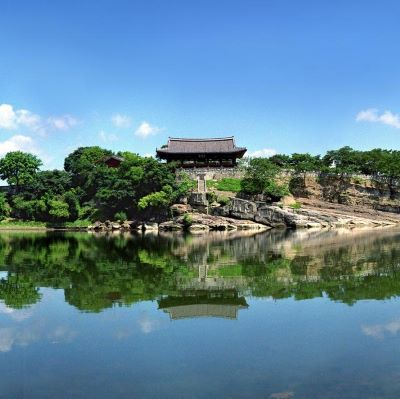
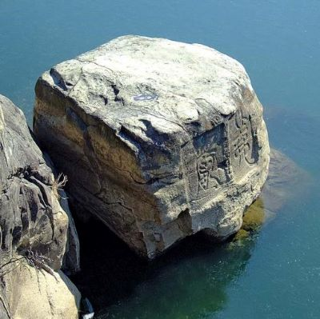
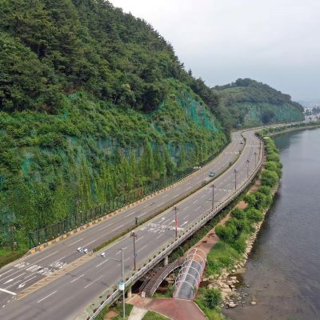
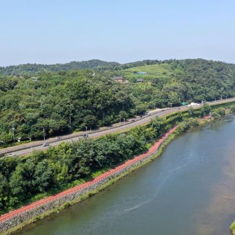
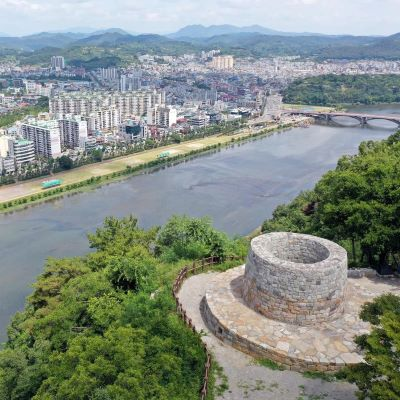
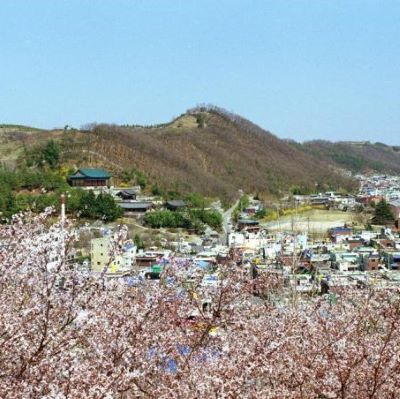
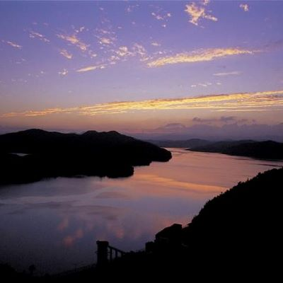

경상남도 방방곡곡
Homepage
지 도
관 광 명 소
진주시
게 시 판
I N F O

제1경 진주성 촉석루
촉석루는 진주의 상징이자 영남 제일의 누각
진주성 남쪽 석벽 위에 장엄하게 높이 솟은 웅장한 위풍은 진주성의 위상을 대변하고 있다.
남창대 또는 장원루라고 한다.

제2경 남강 의암
진주성 촉석루 암벽아래 남강 물속에 있는 바위로서 임진왜란 때 논개가 이 바위에서 왜장을 껴안고 투신한 후 의리를 세운 바위라 하여 의암(義巖)이라는 이름을 얻게 되었다.

제3경 뒤벼리
남가람 문화거리를 마주보며 남강 가에 우뚝 솟은 벼랑으로 굽이쳐 흐르는 남강과 어우러져 한 폭의 그림을 연출하는 곳
남강의 오묘한 풍치를 연상케하는 곳이다.

제4경 새벼리
시내로 들어오는 길목에 위치한 새벼리는 가좌동에서 주약동에 걸쳐있는 절벽을 말하는데 아래의 남강과 절벽을 따라 펼쳐진 도로가 주변 경관과 아름다운 조화를 이룬 곳

제5경 망진산 봉수대
이곳 봉수대는 예부터 외적의 침입을 알리는 통신 수단으로 이용된 것으로 크기는 옛날의 것보다 1/3로 축소 조성되었다. 날씨가 맑은 날은 지리산까지 볼 수 있다.

제6경 비봉산의 봄
비봉산은 시내지역을 조망할 수 있는 곳으로 산을 중심으로 비봉공원이 형성되어 있으며 산 동쪽에 의곡사(義谷寺)와 연화사가 있고, 서쪽 기슭에는 비봉루(飛鳳樓)가 있다.
제7경 월아산 해돋이
월아산은 도시자연공원으로 지정된 아름다운 산
아산토월(牙山吐月)이라 하여 동쪽 멀리 우뚝 솟은 월아산이 달을 머금고 금호지에 토해내는 장면은 천하일품이다.

제8경 진양호 노을
진양호는 덕천강과 경호강이 만나는 곳에 위치한 인공호수이다.
이곳의 노을은 진양호 주변경관과 어우러져 무한한 아름다움을 연출한다.
경상남도 방방곡곡
경상대학교 컴퓨터과학과 | 2020학년도 웹프로그래밍